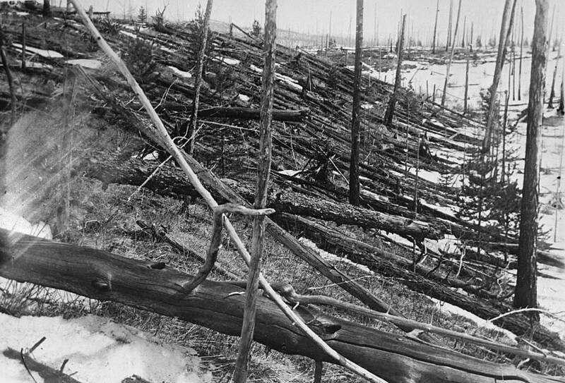

Tunguska event
Central Siberia, Russia, 1908

On June 30, 1908, an air burst flattened millions of trees across more than 2,000 square km of taiga. Scientists attribute it to a meteor, but a 1946 science fiction story made it a famous alien spaceship legend. 1
Open in the interactive Watcher
Related
Sources
- Tunguska event Wikipedia